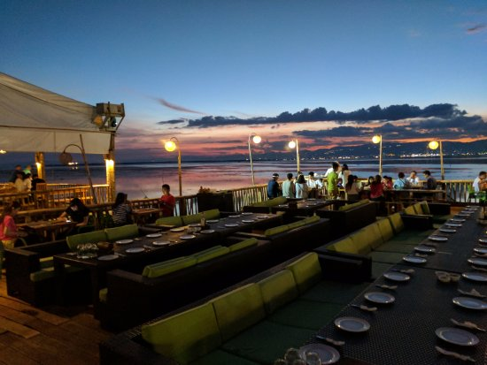
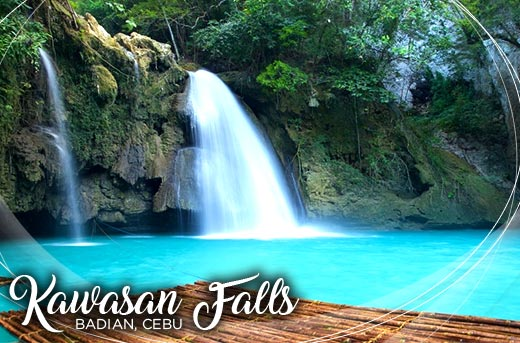
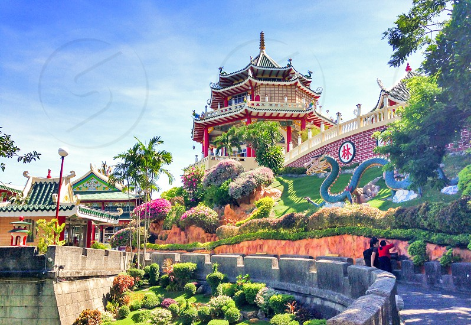

|  |
Lantaw Restaurant
Lantaw restuarant is a floating restaurant that serves a lot of tasty seafoods
. You get to see a nice view of the sunset while eating.
The view is so cool, plus it's also good for taking pictures.
|
|  |
Kawasan Fall
Kawasan Falls is the best water fall I've been to. The water it so clean. It's a cool treat for summer because the water is so.
The area is surrounded by a lot of trees so it's perfect to go there to cool off.
There are a lot of areas you can take a picture. If you want a bit of a challenge, you can dive. Nah, not for me.
I prefer to stay safe.
|
|  |
Cebu Taoist Temple
The Cebu Taoist Temple is one of the tourist attractions in Cebu. The spot I really like is near the dragon.
If you go there in summer time make sure to bring umbrella because it's hot.
|
 |
Papa Kit's Marina Lagoon
In Papa Kit's you can do a lot of activities there like fishing, do some climbing stuffs, and boating. You can also zip line if your not scared of height that is.
Did I also mention that the fishes that you caught can be cooked in the restaurant there and you can eat them there too?
By the way if you don't know how to fish don't worry because they have guides to assist you,
so you'lll be sure to catch fresh fish by your own hands. They have a lot of tasty food in there, so you're tummy will be happy.
|